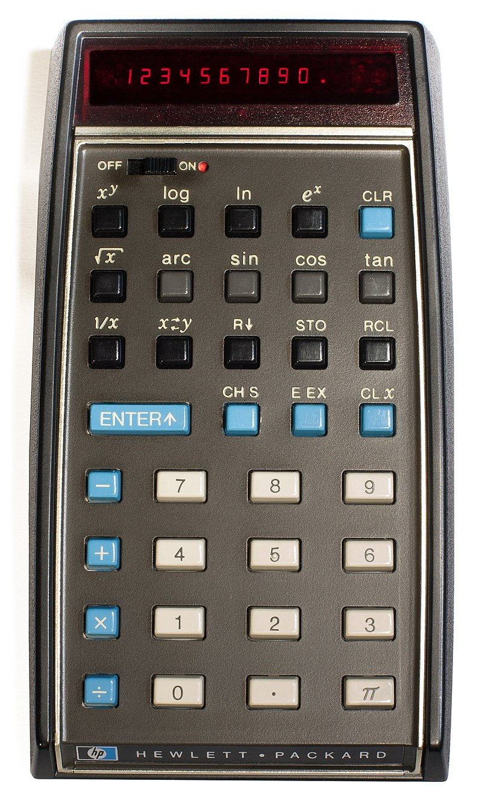

Here is a discrete-time dynamical system that plays an outside role in the history of “chaos theory.” \[x_{i+1} = \cos(x_i)\] Students who grew up in the 1960s and early 1970s typically had no access to computers and routinely performed calculations on a slide rule. You might enjoy this scene from “Apollo 13,” a movie about the aborted 1970 mission to the moon. (The calculating action is at about 1:00 in the video.)
So when Hewlett Packard released its HP-33 scientific calculator in 1972 (costing $395, which adjusted for inflation is about $2500 in 2020 money), there was considerable excitement. (Most students had to wait until the TI-30 in 1976 which was a more affordable $27.)
 Many a student discovered that starting up the calculator with 0 in the display, and then repeatedly pressing cos, produced a surprising (but correct!) result. After each press, the display showed the cosine of what had previously been on the display, that is \(x_\mbox{next press} = \cos(x_\mbox{previous})\)
The sandbox provides a way to replicate the calculation in R. In the initial example, the cos button is being pressed three times, from an initial condition of \(x_0 = 0\).
0 %>% cos() %>% cos() %>% cos() %>% cos() %>% cos()A more convenient way to iterate is provided by the (aptly named) Iterate() function. To use it, you provide a function, an initial condition, and a number of iterations. It returns a data frame showing each of the iterations. In the sandbox, we use Iterate(), print out the data frame, and graph \(x_i\) versus \(i\)
iters <- Iterate(cos, x0 = 0, n = 10)
iters
gf_point(x ~ n, data = iters)Once the display reaches the that certain value (the correct answer from the previous question), it will stay there despite continued pressing of the cos button. This is called a “fixed point.” Fixed points will be very important in our exploration of dynamics.
One of the people playing with calculators in the 1970s was a physicist at Los Alamos, Mitchell T. Feigenbaum. He was one of those legendary geniuses who turn play into fundamental discoveries. (Read his 2019 obituary here.)
The question Feigenbaum asked himself is whether the behavior seen in the cos iteration is true of other functions as well. You can follow is investigations by replace cos in the iteration by
feigenbaum <- makeFun(mu * cos(x) ~ x, mu=1)The parameter mu (written \(\mu\) in Greek) can be set to other values. Surprisingly rich patterns are created for \(3 \leq \mu \leq 4\) as you can see by iterating with \(\mu = 4\), like this:
Traj <- Iterate(feigenbaum, x0=0, n=200, list(mu=4))
gf_point(x ~ n, data = Traj)